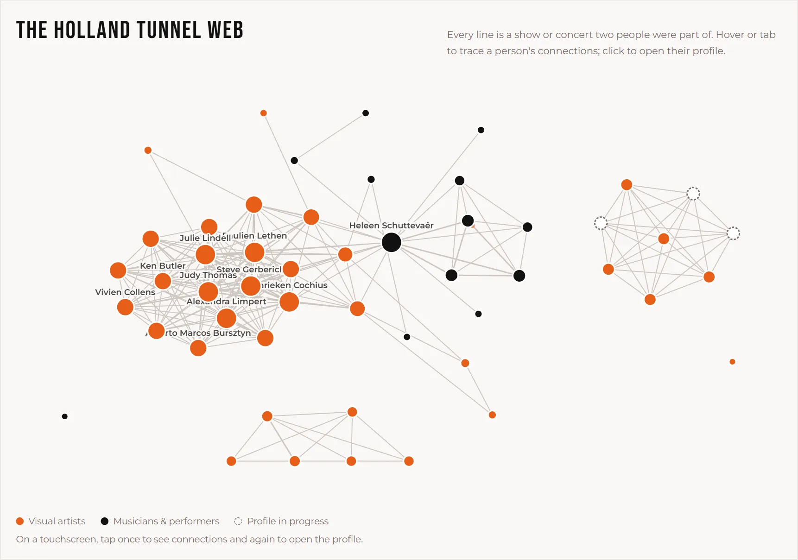
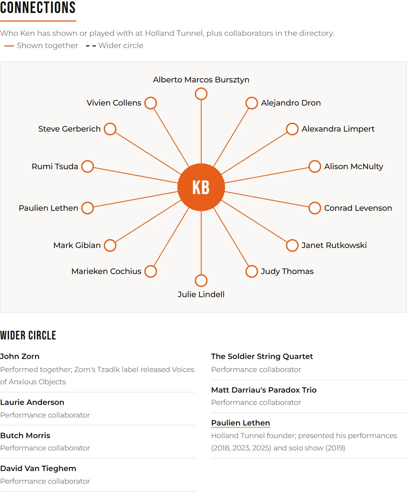
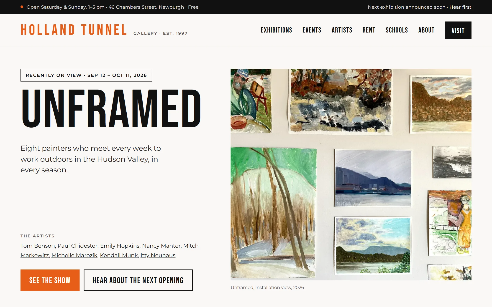
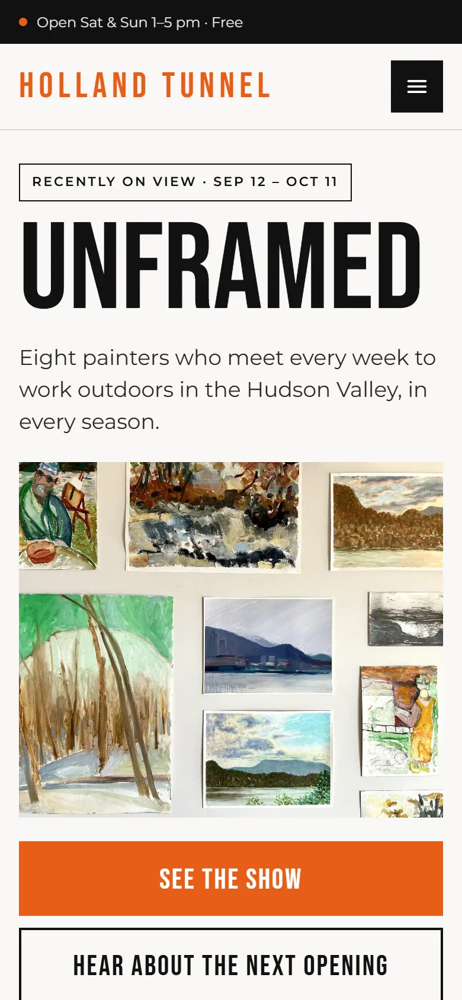

More than 740 artists and musicians have shown or played at Holland Tunnel since 1997. The rebuild starts with the ones the gallery can document: 51 people and 35 shows, each stored as a single JSON file with a typed schema, so a malformed entry fails the build instead of reaching the live site. The main rule of the content model is that each artist's file lists the shows they were part of, and nothing else records a connection. That one list drives their Holland Tunnel record, the show pages, the directory filter, the connection wheel on every co-exhibitor's profile, and the network graph of the whole gallery. Adding an artist to a show updates all of them at once, and none can disagree with another.
The same files are ready for a headless CMS (Decap, Tina or Sanity) later, without changing a template.

Both graphs are laid out when the site is built, not in the browser, so the SVG is complete on the first paint and readable with scripts off. A small script only adds highlighting: hover, tab, or tap once on a touchscreen to trace one person's connections, and again to open their profile. Each profile has its own wheel: the artist in the middle, solid orange lines to everyone they showed with at Holland Tunnel, and dashed lines to collaborators from outside the gallery who also have a profile, such as a band or a composer they performed with. Visual artists and musicians are told apart by color, and the colors differ in lightness too, not just in hue.

Much of an archive going back to 1997 is half-remembered, and a gallery's site shouldn't publish guesses about real people. So every profile has a verification status, with its evidence and sources stored next to it, and that one field decides how far the profile travels:
When the gallery confirms someone, changing one word in their file updates the badge, the indexing tag, the sitemap and their directory card. Artists can also claim their profile through a form that emails the gallery, and nothing is published until Paulien reviews it.
A gallery's home page is usually wrong the day after a show closes. Here nothing hard-codes a show: the hero, the first program card, the “Is it open?” answers and the exhibitions page all pick the show on view now, else the next one coming up, else the most recent, with the next exhibition “announced soon.” Because the site is static, it decides at build time, so a daily rebuild flips it on opening and closing days. As a backup, any line with an end date, such as “closes Oct 11,” hides itself in the browser once that date passes.
Every page carries structured data from the same files: the gallery as an ArtGallery with its hours and founder, exhibitions as ExhibitionEvent, concerts as MusicEvent with their performers, and artist films as VideoObject. The old Squarespace addresses redirect permanently to their new pages, so existing links and rankings carry over.
Artists are the gallery's best promoters, so every profile is built to be shared. At build time the site draws two images per artist from their profile data, in the gallery's own fonts and colors: a 1200×630 link preview and a 1080×1920 Instagram Story. On a phone, Share opens the system share sheet. Instagram Story shares the image as a file, which is what makes Instagram offer a Story, and copies the link for a link sticker. Each link is tagged by platform, so the gallery can see where visitors come from.
The first rebuild kept the gallery's existing look: its orange, Bebas Neue and Montserrat, and a centered header like the Squarespace site's. The redesign that launched keeps all three brand elements and changes how boldly they're used. The show title becomes the headline at poster scale. A left-aligned masthead with a single Visit button replaces the centered stack of links. A bar across the top answers the first question every visitor has: is it open? Programs read as one list (the music nights, Cinema Club and school visits), recent shows get their own row, and a block for the 51 artists and musicians leads into the archive.
Contrast set the rules. The orange measures 3.5:1 on white, enough for large type but not for body text, so orange is used for fills and type of 24 px and up. The rental band is orange with black text instead of white, and labels use a darker gray that passes at small sizes. Corners are square and nothing has a shadow, like white gallery walls and printed posters.


Holland Tunnel's story is its people: a garden shed that became a meeting place for hundreds of artists and musicians over three locations and almost three decades. The old site listed shows. The rebuild records who made them and how they're connected, publishes only what the gallery can stand behind, and keeps itself current without anyone editing the home page. The redesign gives that archive a front door as bold as the gallery's own history. It is live at hollandtunnelgallery.com.
More work →